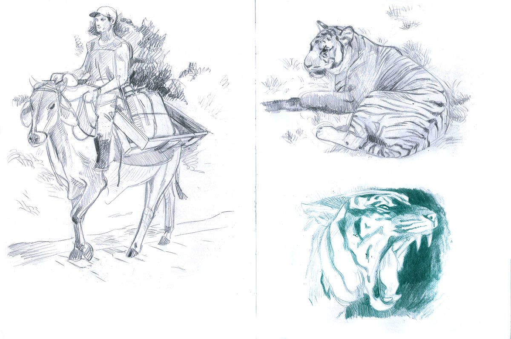
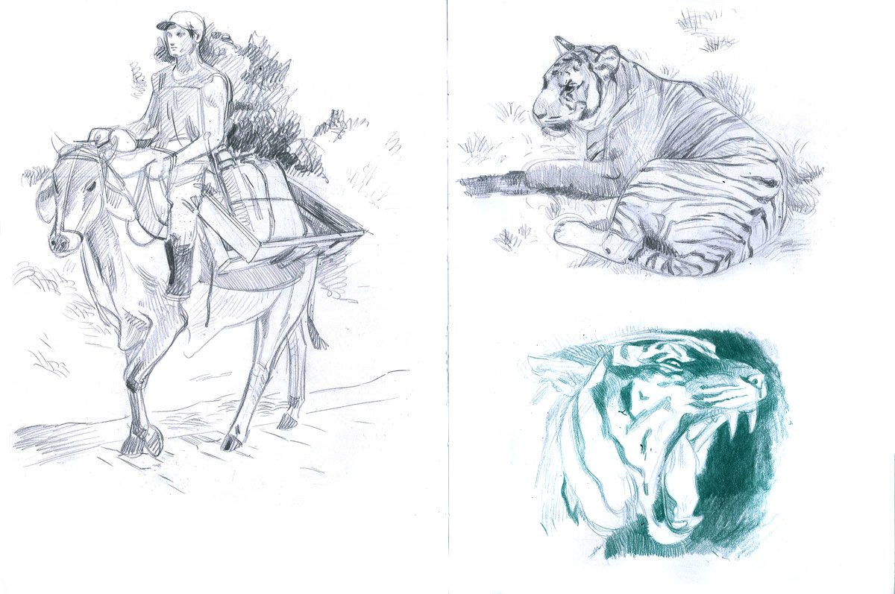
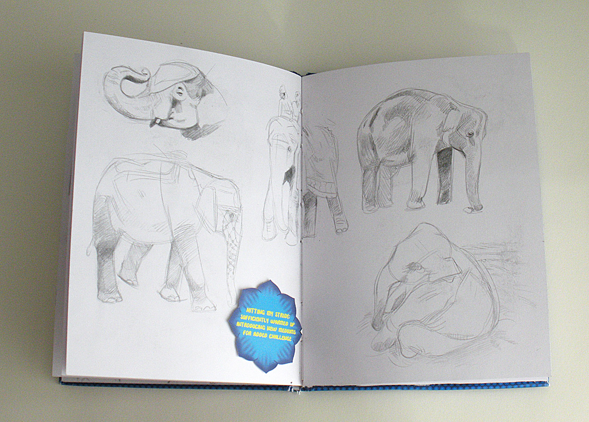
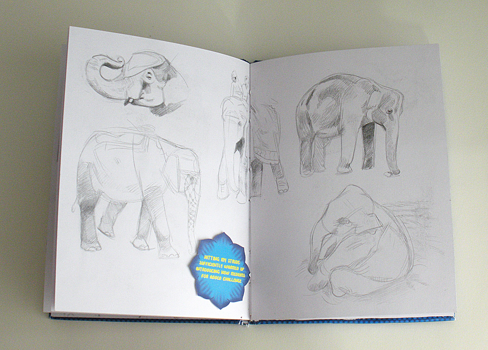
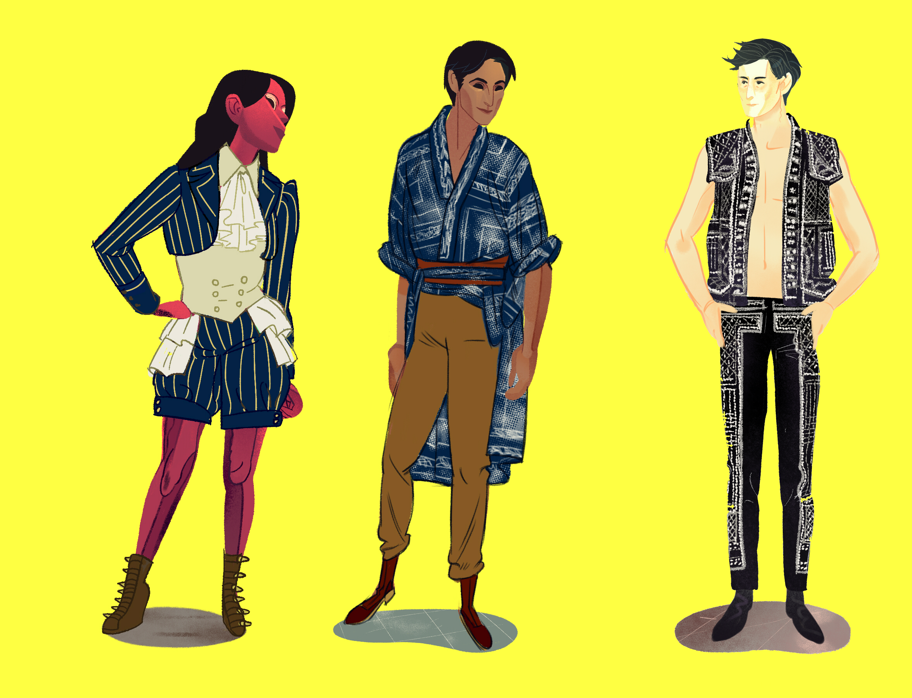
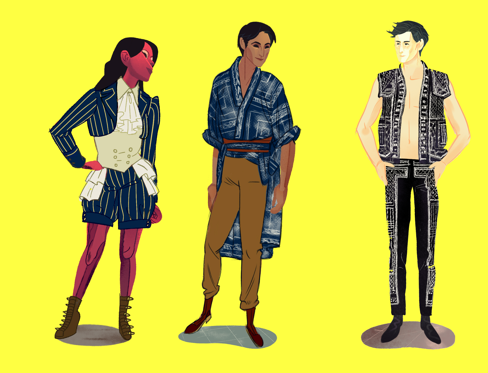
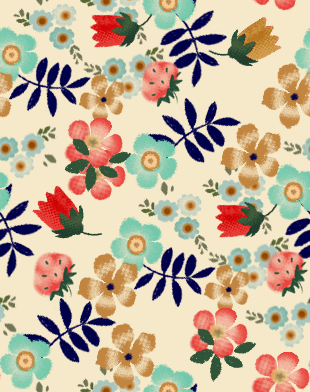
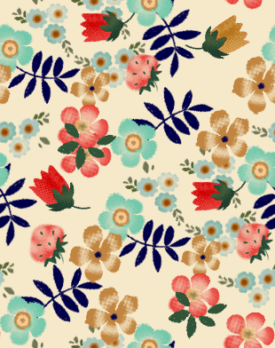

--
Fall 2013
Personal work.
Losing A Whole Year
Fall 2013
Personal work.

Inner Peace
Spring 2013/ Editorial
Woman sees her quirkiness mirrored in her tortoise; her unusual pet choice reaffirms her self-acceptance.
Mr. Fix It
Fall 2013
Poster Design/Personal work
My tribute to Richard Scarry's Busytown.
My tribute to Richard Scarry's Busytown.


Rose Room Dyptich
Fall 2012

Sandy Dyptich
Summer 2012
Personal Work.

Rise to the Challenge
Spring 2012
Editorial

Costume Contest Poster
Fall 2011
Poster Design.
Poster for MICA's annual Halloween Party. 2011's theme was Star Wars.


MEAT
2013
Series of posters in which I worked outside of my comfort zone in technique. Even though I don't have a firmly set working style for everything, these represent a departure from my usual: while sketching was still done in pencil, the sketches were then taken right into adobe illustrator. The vector paths and shapes were then shuttled into PS for textures, fills, background effects.
Though my hand drawn+inked work is regularly called slick these collages take it to a new level: working with vector paths and applied photo textures, I feel my "hand" has been completely removed from the final image—except in the "Meat" title text, which was hand drawn start to finish.
Though my hand drawn+inked work is regularly called slick these collages take it to a new level: working with vector paths and applied photo textures, I feel my "hand" has been completely removed from the final image—except in the "Meat" title text, which was hand drawn start to finish.

Pokey Suite
Spring 2013
For junior year's "mini thesis" I made a products suite unified through pattern around my original kawaii mascot "Pokey".


 

 



Animals of India
Spring 2013
I created this book as a gift for a friend after learning he had taken a trip to India over winter break but was too busy to see the sights. India's wildlife is some of my favorite, and I keep a strict daily regimen of studies (usually wildlife studies), why not combine the two in an affectionate gesture? I made this book on top of an already overloaded course schedule. Filling 26 pages with art was easy; the difficulty lay in creating a wholly designed object—everything, font, icons, patterns, and layout—then assembling it by hand for a one of a kind, precious art object.
exploring mass print options for 2014.
exploring mass print options for 2014.

Robyn: Anatomy of a Monster

all line layers
really cool glitch happened
2012
What the hell is a sparkledog? An unlikely question with a more improbable answer. The absurd contrast between fantastical doge and medical illustration tickled my funny bone just right and I set about answering visually, a product of my love for both information graphics and the ridiculous online subcultures that were formative in my youth.
all line layers
really cool glitch happened

 

 



Paper Dolls
Fall 2012
A semester long assignment from Lifestyle Illustration; we were tasked with making then dressing paper dolls every week. My dolls tried on a variety of styles looking for something comfortable—and I don't mean just clothing! I completely made them over, redrawing them from scratch in a completely different style about 3 weeks in. I also made the conscious decision to draw three POC as my models because underrepresentation in the fashion industry is an issue I feel strongly about.


Grey Plumage
Summer 2011~ Ongoing
Initiated after falling out with a close friend, this series began as an attempt to mask my style and push my work to look more "legitimate".
Before this series, I had relied on linework to help me define forms; without line, I could focus in on shape as I hadn't been able before. The subject matter is of little significance other than to lend cohesion to this stylistic exploration.
Before this series, I had relied on linework to help me define forms; without line, I could focus in on shape as I hadn't been able before. The subject matter is of little significance other than to lend cohesion to this stylistic exploration.


Drawings of my Drives
Summer 2011
Project in which I designed creatures to characterize my external hard drives.
Animals of India
 Custom font. Designed only what glyphs were neccessary, since intended to be a small caps font, upper and lower cases were used for variations on the same cap, adding variety and spontinaity.
fonts featured in front cover address and annotations.
Custom font. Designed only what glyphs were neccessary, since intended to be a small caps font, upper and lower cases were used for variations on the same cap, adding variety and spontinaity.
fonts featured in front cover address and annotations.
The custom lettering for this project went beyond just the obvious hand drawn caps of "India" , I designed a whole font for the project, an amalgam of my own handwriting and the striking handpainted signage of the region.
Custom font. Designed only what glyphs were neccessary, since intended to be a small caps font, upper and lower cases were used for variations on the same cap, adding variety and spontinaity.
fonts featured in front cover address and annotations.